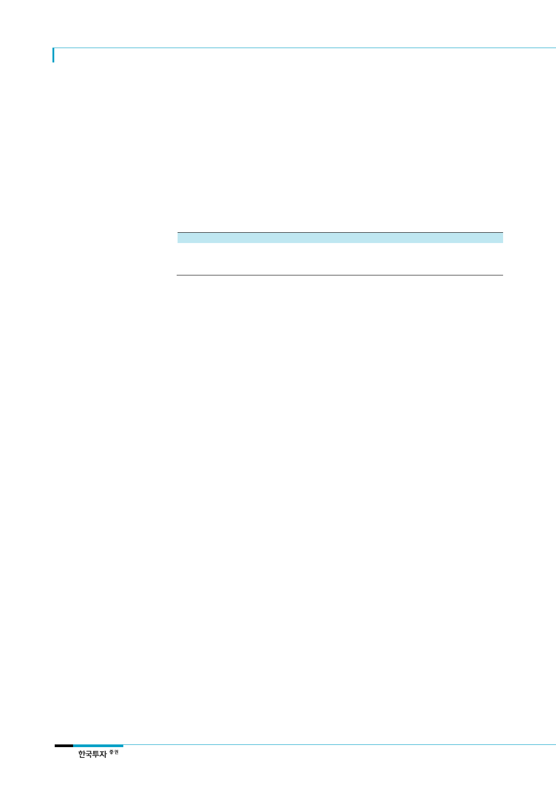

삼성바이오로직스(207940)
CMO사업은
Large Player들이 과점
진입장벽 #1: 자본집약적
사업
진입장벽 #2: 높은
품질 및 생산기준
진입장벽 #3: 고객사로부터
선정되기 어려움
2) 높은 진입장벽의 CMO사업은 삼성그룹에 걸 맞는 비즈니스 모델
한국보건산업진흥원(KHIDI)에 따르면 2014년 기준 세계적으로 약 600 여개의 CMO업체
들이 있으며 이 중 연매출 2억 5천만 달러 이상을 올리는 회사는 12개 정도에 불과하다.
이들 대형 CMO업체들의 공통점은 대규모 자본, 높은 수준의 R&D와 인적자원 그리고 많
은 지적재산권을 보유한 다국적 기업들이라는 점이다. 반도체, 디스플레이 등에서 선두를
달리고 있는 삼성그룹이 CMO산업에서도 유리한 고지를 점할 가능성이 높다는 것을 알
수 있는 대목이다. 높은 진입장벽을 기반으로 대형 CMO업체들이 시장을 과점하는 현재
구조가 지속되면서 동사의 확고한 시장 입지는 앞으로도 유지될 전망이다.
<표 6> 세그먼트별 글로벌 CMO 업체 수
구분
대형 CMO
중형 CMO
소형 CMO
자료: 한국보건산업진흥원, 한국투자증권
기업 수
~12
~45
>500
(단위: 개, 백만 달러)
매출액
>250
100~250
<100
CMO산업은 자본집약적이고 높은 품질과 생산기준을 맞춰야 하며 고객사들의 Inner
Circle에 진입하기가 어렵다는 점이 진입장벽으로 작용한다. 고객의 수요를 충족하기 위해
서는 대규모 설비투자가 수반되어야 하기 때문에 자본이 충분하지 않으면 시장에 진입하
기 어렵다. 동사의 경우에도 1공장과 2공장에 각각 3,500억원과 6,500억원을 투자했으며
3공장에도 약 7,000~8,000억원의 설비투자비가 소요될 예정이다. 동사는 설립 초기 삼
성전자와 삼성물산 등으로부터 자본을 조달해 1공장과 2공장을 설립했다. 삼성엔지니어링
과 삼성물산이 공장설립을 담당하면서 건설비용도 절감할 수 있었다.
인간의 건강에 직접적인 영향을 미치는 의약품을 생산하는 사업의 특성상 CMO설비는 국
내 식약처, 미국 FDA, 유럽 EMA 등과 같은 각국의 품질관리 기관으로부터 엄격한 품질
인증이 요구된다. 승인을 얻은 이후에도 약 2년 간격으로 이들 규제기관으로부터 주기적
으로 관리감독을 받게 된다. 따라서 대규모 생산 경험이 부족한 CMO 회사들은 글로벌 제
약사들과의 계약 체결이 어려울 수 밖에 없다. 초기에는 삼성그룹의 브랜드 파워로 대형
고객사들을 확보할 수 있었고 앞으로는 지속적인 레퍼런스 축적으로 더 많은 고객사들을
확보할 것으로 예상한다.
제약사들이 한번 CMO업체를 선정하면 교체하기 힘들다는 점 또한 높은 진입장벽이다. 고
객사들이 CMO업체를 선정하는데 있어 신중할 수 밖에 없기 때문이다. 고객사와 계약을
체결한 후 제품을 양산하는데 일반적으로 1~2년이 소요되는데 이 기간 중에 기술이전과
안전점검, 제조승인을 위한 시제품 생산 등이 이루어진다. 제약사는 생산준비 과정에서
R&D 및 원재료 비용 등을 CMO업체에 지불해야 한다. 시제품을 생산하는 데까지 소요되
는 비용과 시간은 고객사들에게 있어 CMO를 교체하는데 큰 장애가 되는 매몰비용이다.
판매를 극대화하기 위해서는 신제품을 적절한 시기에 출시하는 것이 중요하기 때문에 생
산 타이밍을 맞추기 위해 제약사들은 CMO 선정 시 업체들을 철저히 검증한다. 따라서 자
본과 설비를 갖추었더라도 신규업체들이 제약사들로부터 CMO로 선정되기까지는 추가적
인 시간과 노력이 필요하다. 따라서 공급과잉의 가능성이 있다면 신규업체의 진입보다는
기존업체들의 증설에 따른 위험이 더 클 것이다.
14